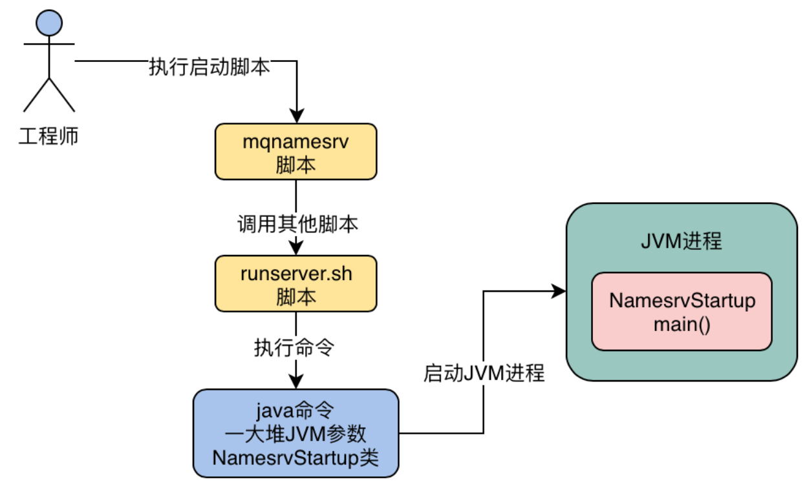
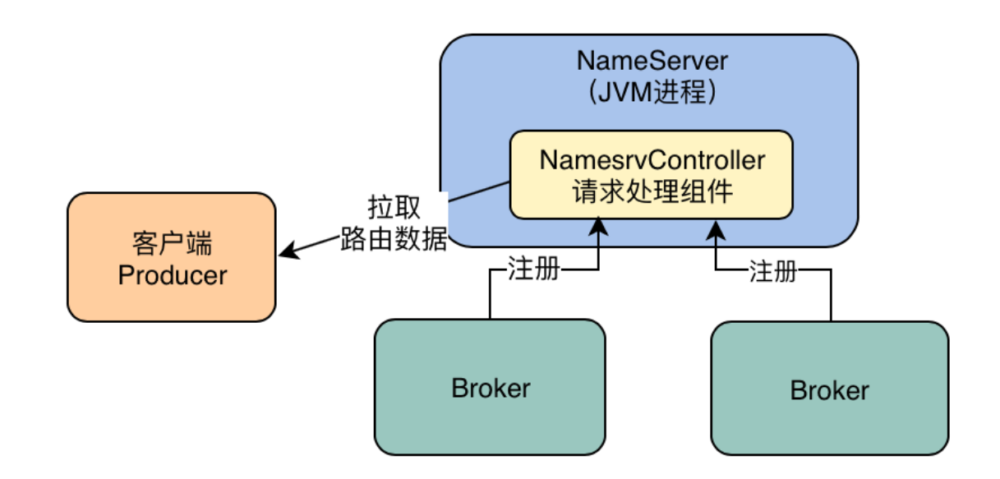
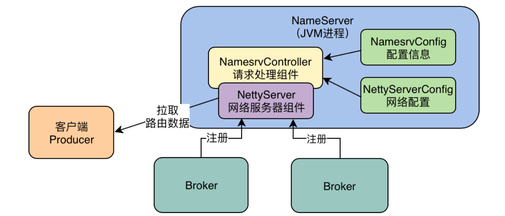
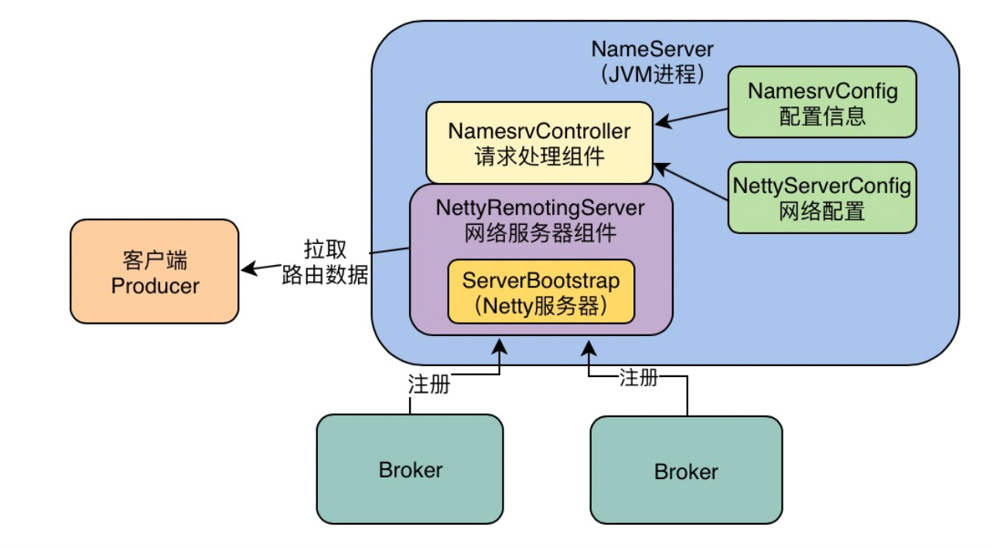

RocketMQ源码分析（二）——NameServer启动流程
上一章，我们已经搭建好了RocketMQ的源码环境。从本章开始，我们正式进入RocketMQ的源码分析环节。分析一个开源框架的源码，必然从开源框架的入口开始。
在RocketMQ使用的时候，第一个步骤一定是先启动NameServer，那么我们就先来分析NameServer启动这块的源码。
一、启动入口
1.1 启动脚本
我们之前在《RocketMQ生产部署》一章中，讲解过NameServer的启动，启动脚本在distribution模块的bin目录下——mqnamesrv。
这个脚本中有极为关键的一行命令用于启动NameServer进程：
sh ${ROCKETMQ_HOME}/bin/runserver.sh org.apache.rocketmq.namesrv.NamesrvStartup $@
可以看到，上面的命令其实是执行了runserver.sh这个脚本，然后通过这个脚本去启动了NamesrvStartup这个Java类，下面是runserver.sh这个脚本的一些内容：
JAVA_OPT="${JAVA_OPT} -server -Xms4g -Xmx4g -Xmn2g -XX:MetaspaceSize=128m -XX:MaxMetaspaceSize=320m"
JAVA_OPT="${JAVA_OPT} -XX:+UseConcMarkSweepGC -XX:+UseCMSCompactAtFullCollection -XX:CMSInitiatingOccupancyFraction=70 -XX:+CMSParallelRemarkEnabled -XX:SoftRefLRUPolicyMSPerMB=0 -XX:+CMSClassUnloadingEnabled -XX:SurvivorRatio=8 -XX:-UseParNewGC"
JAVA_OPT="${JAVA_OPT} -verbose:gc -Xloggc:${GC_LOG_DIR}/rmq_srv_gc_%p_%t.log -XX:+PrintGCDetails"
JAVA_OPT="${JAVA_OPT} -XX:+UseGCLogFileRotation -XX:NumberOfGCLogFiles=5 -XX:GCLogFileSize=30m"
JAVA_OPT="${JAVA_OPT} -XX:-OmitStackTraceInFastThrow"
JAVA_OPT="${JAVA_OPT} -XX:-UseLargePages"
JAVA_OPT="${JAVA_OPT} -Djava.ext.dirs=${JAVA_HOME}/jre/lib/ext:${BASE_DIR}/lib"
#JAVA_OPT="${JAVA_OPT} -Xdebug -Xrunjdwp:transport=dt_socket,address=9555,server=y,suspend=n"
JAVA_OPT="${JAVA_OPT} ${JAVA_OPT_EXT}"
JAVA_OPT="${JAVA_OPT} -cp ${CLASSPATH}"
$JAVA ${JAVA_OPT} $@
其实就是通过java命令去执行NamesrvStartup.main()方法，启动一个JVM进程：

1.2 NamesrvStartup类
我们来看下NamesrvStartup类的main方法：
public class NamesrvStartup {
// 忽略这些跟主体逻辑相关度不大的分支代码
private static InternalLogger log;
private static Properties properties = null;
private static CommandLine commandLine = null;
public static void main(String[] args) {
main0(args);
}
public static NamesrvController main0(String[] args) {
try {
NamesrvController controller = createNamesrvController(args);
start(controller);
String tip = "The Name Server boot success. serializeType=" + RemotingCommand.getSerializeTypeConfigInThisServer();
log.info(tip);
System.out.printf("%s%n", tip);
return controller;
} catch (Throwable e) {
e.printStackTrace();
System.exit(-1);
}
return null;
}
//...
}
可以看到，在main()方法内部最核心的逻辑是创建了一个NamesrvController对象，然后调用start(controller)方法来启动这个Controller。
二、创建NamesrvController
NamesrvController是什么呢？其实从命名就可以看出这是一个控制器，熟悉Spring的童鞋应该不会陌生，Controller一般用于接受请求，那么NameServer接受什么请求呢？当然是Broker的注册请求、心跳请求，以及Producer和Consumer的拉取路由信息请求。
NamesrvController这个组件，就是NameServer专门用来接受Broker和客户端的网络请求的一个组件：

2.1 构建NameServer配置对象
我们来看下创建NamesrvController的代码：
public static NamesrvController createNamesrvController(String[] args) throws IOException, JoranException {
System.setProperty(RemotingCommand.REMOTING_VERSION_KEY, Integer.toString(MQVersion.CURRENT_VERSION));
//PackageConflictDetect.detectFastjson();
// 解析命令行中的参数
Options options = ServerUtil.buildCommandlineOptions(new Options());
commandLine = ServerUtil.parseCmdLine("mqnamesrv", args, buildCommandlineOptions(options), new PosixParser());
if (null == commandLine) {
System.exit(-1);
return null;
}
final NamesrvConfig namesrvConfig = new NamesrvConfig();
final NettyServerConfig nettyServerConfig = new NettyServerConfig();
nettyServerConfig.setListenPort(9876);
if (commandLine.hasOption('c')) {
String file = commandLine.getOptionValue('c');
if (file != null) {
// 读取外部配置文件的内容
InputStream in = new BufferedInputStream(new FileInputStream(file));
properties = new Properties();
properties.load(in);
MixAll.properties2Object(properties, namesrvConfig);
MixAll.properties2Object(properties, nettyServerConfig);
namesrvConfig.setConfigStorePath(file);
System.out.printf("load config properties file OK, %s%n", file);
in.close();
}
}
if (commandLine.hasOption('p')) {
InternalLogger console = InternalLoggerFactory.getLogger(LoggerName.NAMESRV_CONSOLE_NAME);
MixAll.printObjectProperties(console, namesrvConfig);
MixAll.printObjectProperties(console, nettyServerConfig);
System.exit(0);
}
MixAll.properties2Object(ServerUtil.commandLine2Properties(commandLine), namesrvConfig);
// 如果ROCKETMQ_HOME为空，就报错退出，这就是我们为什么必须设置ROCKETMQ_HOME环境变量的原因
if (null == namesrvConfig.getRocketmqHome()) {
System.out.printf("Please set the %s variable in your environment to match the location of the RocketMQ installation%n", MixAll.ROCKETMQ_HOME_ENV);
System.exit(-2);
}
// 日志相关配置
LoggerContext lc = (LoggerContext) LoggerFactory.getILoggerFactory();
JoranConfigurator configurator = new JoranConfigurator();
configurator.setContext(lc);
lc.reset();
configurator.doConfigure(namesrvConfig.getRocketmqHome() + "/conf/logback_namesrv.xml");
log = InternalLoggerFactory.getLogger(LoggerName.NAMESRV_LOGGER_NAME);
MixAll.printObjectProperties(log, namesrvConfig);
MixAll.printObjectProperties(log, nettyServerConfig);
final NamesrvController controller = new NamesrvController(namesrvConfig, nettyServerConfig);
// remember all configs to prevent discard
controller.getConfiguration().registerConfig(properties);
return controller;
}
别看上面代码一大堆，其实核心就做了一件事情：解析命名行中的相关参数，然后构建出两个配置对象——NamesrvConfig和NettyServerConfig。
我们在启动NameServer的时候，是使用mqnamesrv命令来启动的，启动的时候可能会在命令行里带入一些参数，所以很上面那块代码，就是解析一下我们传递进去的一些命令行参数而已！
这里最关键的是创建了两个配置对象：
final NamesrvConfig namesrvConfig = new NamesrvConfig();
final NettyServerConfig nettyServerConfig = new NettyServerConfig();
nettyServerConfig.setListenPort(9876);
NamesrvConfig：包含的是NameServer自身运行的一些配置参数，NameServer默认监听请求的端口号是9876，用来接收Broker和客户端的请求；
NettyServerConfig：包含的是用于接收网络请求的Netty服务器的配置参数。

我们以NamesrvConfig为例，看下里面的内容，其实就是些NameServer的默认配置：
public class NamesrvConfig {
private static final InternalLogger log = InternalLoggerFactory.getLogger(LoggerName.NAMESRV_LOGGER_NAME);
private String rocketmqHome = System.getProperty(MixAll.ROCKETMQ_HOME_PROPERTY, System.getenv(MixAll.ROCKETMQ_HOME_ENV));
private String kvConfigPath = System.getProperty("user.home") + File.separator + "namesrv" + File.separator + "kvConfig.json";
private String configStorePath = System.getProperty("user.home") + File.separator + "namesrv" + File.separator + "namesrv.properties";
private String productEnvName = "center";
private boolean clusterTest = false;
private boolean orderMessageEnable = false;
//...
}
2.2 解析配置文件
我们具体来看下是如何解析配置文件的：
// 覆盖配置文件中的配置到配置类中
if (commandLine.hasOption('c')) {
String file = commandLine.getOptionValue('c');
if (file != null) {
InputStream in = new BufferedInputStream(new FileInputStream(file));
properties = new Properties();
properties.load(in);
MixAll.properties2Object(properties, namesrvConfig);
MixAll.properties2Object(properties, nettyServerConfig);
namesrvConfig.setConfigStorePath(file);
System.out.printf("load config properties file OK, %s%n", file);
in.close();
}
}
// 打印配置信息
if (commandLine.hasOption('p')) {
InternalLogger console = InternalLoggerFactory.getLogger(LoggerName.NAMESRV_CONSOLE_NAME);
MixAll.printObjectProperties(console, namesrvConfig);
MixAll.printObjectProperties(console, nettyServerConfig);
System.exit(0);
}
上面的代码意思是说，在启动NameServer的时候，如果用-c选项带上了一个配置文件路径，那么运行到上面的代码，就会把配置文件里的配置，放入两个核心配置类里去。比如有一个配置文件是：nameserver.properties，里面有一个配置是serverWorkerThreads=16，那么上面的代码就会读取出来这个配置，然后覆盖到NettyServerConfig里去！
三、启动NamesrvController
我们回到主流程，构建完了NamesrvController对象后，就执行start()方法来启动NamesrvController了：
public static NamesrvController start(final NamesrvController controller) throws Exception {
if (null == controller) {
throw new IllegalArgumentException("NamesrvController is null");
}
// 初始化NamesrvController
boolean initResult = controller.initialize();
if (!initResult) {
controller.shutdown();
System.exit(-3);
}
// 注册一个shutdown钩子，JVM关闭时会执行
Runtime.getRuntime().addShutdownHook(new ShutdownHookThread(log, new Callable<Void>() {
@Override
public Void call() throws Exception {
controller.shutdown();
return null;
}
}));
// 启动NamesrvController
controller.start();
return controller;
}
3.1 初始化NamesrvController
start方法的核心就是先执行controller.initialize()初始化NamesrvController，然后执行controller.start()启动NamesrvController。我们先来看下initialize方法：
public boolean initialize() {
// kvConfigManager用于管理KV配置
this.kvConfigManager.load();
// 构建NettyRemotingServer对象，其实就是一个Netty网络服务器
this.remotingServer = new NettyRemotingServer(this.nettyServerConfig, this.brokerHousekeepingService);
// 创建Netty服务器的工作线程池
this.remotingExecutor =
Executors.newFixedThreadPool(nettyServerConfig.getServerWorkerThreads(), new ThreadFactoryImpl("RemotingExecutorThread_"));
// 把工作线程池将给Netty管理
this.registerProcessor();
// 启动一个定时任务，扫描那些没发送心跳的Broker
this.scheduledExecutorService.scheduleAtFixedRate(new Runnable() {
@Override
public void run() {
NamesrvController.this.routeInfoManager.scanNotActiveBroker();
}
}, 5, 10, TimeUnit.SECONDS);
// 启动一个定时任务，打印KV配置信息
this.scheduledExecutorService.scheduleAtFixedRate(new Runnable() {
@Override
public void run() {
NamesrvController.this.kvConfigManager.printAllPeriodically();
}
}, 1, 10, TimeUnit.MINUTES);
//...
return true;
}
controller.initialize()方法，核心就是把NettyRemotingServer网络服务器组件给构造了出来，其内部用到了Netty的核心类——ServerBootstrap：
public NettyRemotingServer(final NettyServerConfig nettyServerConfig,
final ChannelEventListener channelEventListener) {
super(nettyServerConfig.getServerOnewaySemaphoreValue(), nettyServerConfig.getServerAsyncSemaphoreValue());
// Netty核心类
this.serverBootstrap = new ServerBootstrap();
this.nettyServerConfig = nettyServerConfig;
this.channelEventListener = channelEventListener;
//...
}

3.2 启动Netty Server
初始化完NamesrvController后，我们再来看下NamesrvController的启动：
public void start() throws Exception {
this.remotingServer.start();
if (this.fileWatchService != null) {
this.fileWatchService.start();
}
}
NamesrvContorller的启动，核心就是内部的NettyRemotingServer的启动，这段代码没什么好说的，都是些Netty API的代码：
public void start() {
// 对Netty的各种配置，核心就是基于Netty的API去配置和启动一个网络服务器
this.defaultEventExecutorGroup = new DefaultEventExecutorGroup(
nettyServerConfig.getServerWorkerThreads(),
new ThreadFactory() {
private AtomicInteger threadIndex = new AtomicInteger(0);
@Override
public Thread newThread(Runnable r) {
return new Thread(r, "NettyServerCodecThread_" + this.threadIndex.incrementAndGet());
}
});
prepareSharableHandlers();
ServerBootstrap childHandler =
this.serverBootstrap.group(this.eventLoopGroupBoss, this.eventLoopGroupSelector)
.channel(useEpoll() ? EpollServerSocketChannel.class : NioServerSocketChannel.class)
.option(ChannelOption.SO_BACKLOG, 1024)
.option(ChannelOption.SO_REUSEADDR, true)
.option(ChannelOption.SO_KEEPALIVE, false)
.childOption(ChannelOption.TCP_NODELAY, true)
.childOption(ChannelOption.SO_SNDBUF, nettyServerConfig.getServerSocketSndBufSize())
.childOption(ChannelOption.SO_RCVBUF, nettyServerConfig.getServerSocketRcvBufSize())
.localAddress(new InetSocketAddress(this.nettyServerConfig.getListenPort()))
.childHandler(new ChannelInitializer<SocketChannel>() {
@Override
public void initChannel(SocketChannel ch) throws Exception {
ch.pipeline()
.addLast(defaultEventExecutorGroup, HANDSHAKE_HANDLER_NAME, handshakeHandler)
.addLast(defaultEventExecutorGroup,
encoder,
new NettyDecoder(),
new IdleStateHandler(0, 0, nettyServerConfig.getServerChannelMaxIdleTimeSeconds()),
connectionManageHandler,
serverHandler
);
}
});
if (nettyServerConfig.isServerPooledByteBufAllocatorEnable()) {
childHandler.childOption(ChannelOption.ALLOCATOR, PooledByteBufAllocator.DEFAULT);
}
try {
// 核心是这里，bind方法就是绑定和监听指定端口，默认是9876
ChannelFuture sync = this.serverBootstrap.bind().sync();
InetSocketAddress addr = (InetSocketAddress) sync.channel().localAddress();
this.port = addr.getPort();
} catch (InterruptedException e1) {
throw new RuntimeException("this.serverBootstrap.bind().sync() InterruptedException", e1);
}
if (this.channelEventListener != null) {
// 启动netty服务
this.nettyEventExecutor.start();
}
this.timer.scheduleAtFixedRate(new TimerTask() {
@Override
public void run() {
try {
NettyRemotingServer.this.scanResponseTable();
} catch (Throwable e) {
log.error("scanResponseTable exception", e);
}
}
}, 1000 * 3, 1000);
}

三、总结
本章，我们分析了NameServer的启动源码，了解到它最核心的就是基于Netty实现了一个网络服务器，然后监听默认的9876端口，这样就可以接收Broker和客户端的网络请求了。